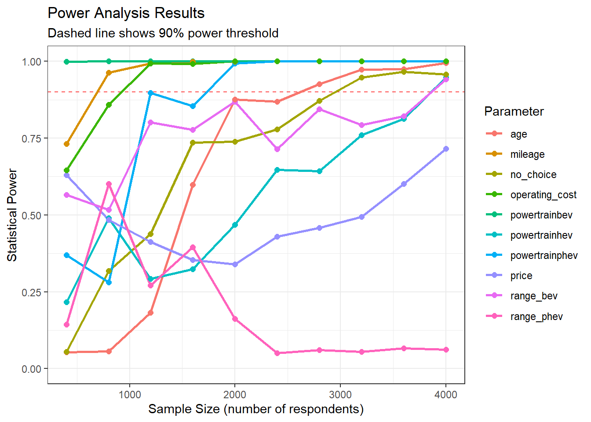
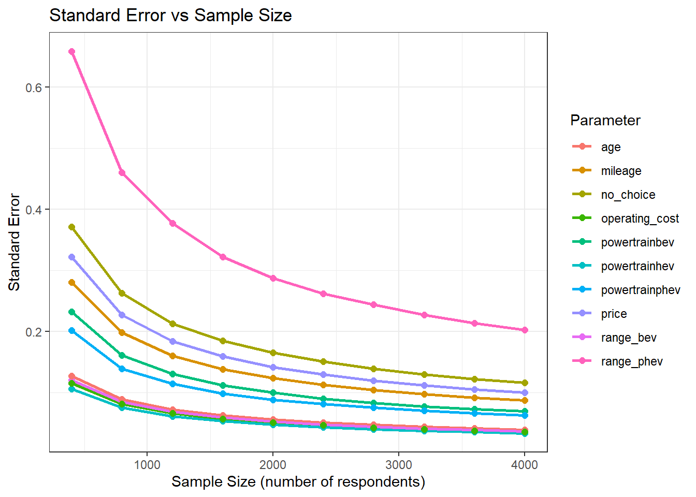
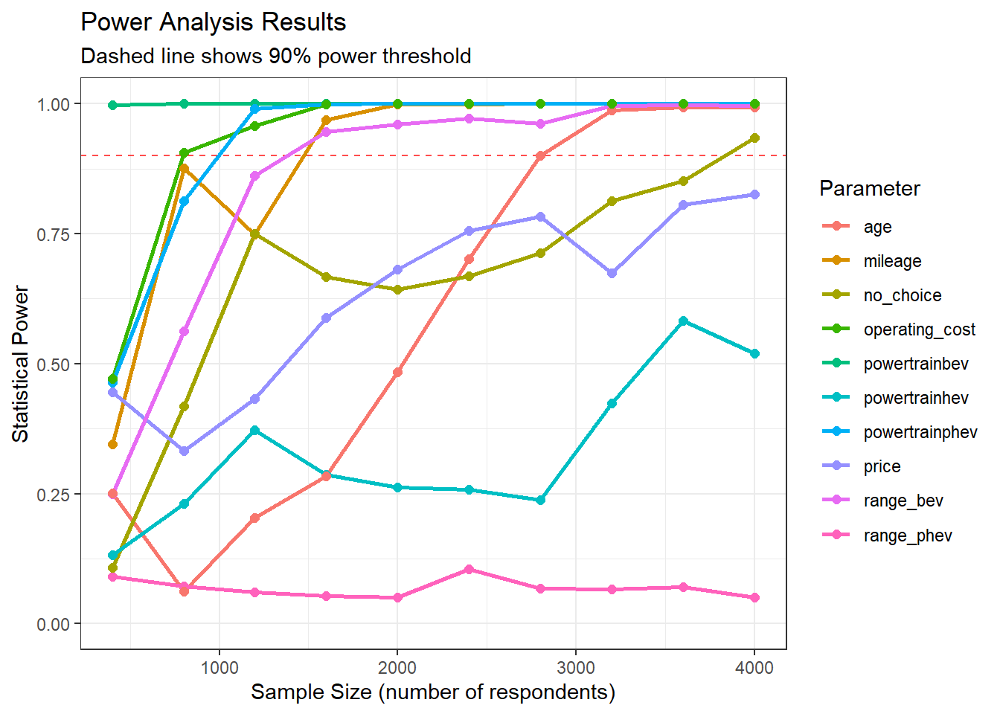
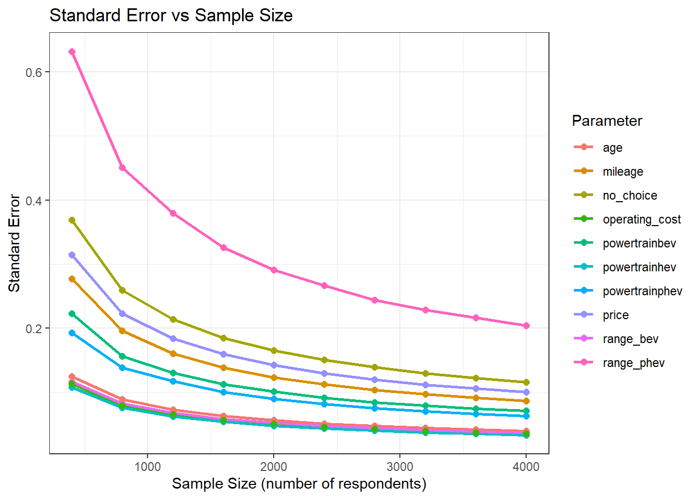

profiles <- cbc_profiles(
powertrain = c('gas', 'bev', 'phev', 'hev'),
price = seq(0.8, 1.1, 0.1),
range_bev = c(0, seq(0.5, 2.5, 0.5)), # x 100
range_phev = c(0, seq(0.1, 0.4, 0.1)), # x 100
mileage = seq(0.2, 0.6, 0.05), # x 100000
age = seq(0.2, 1.0, 0.2), # make_year changed to age x10
operating_cost = seq(0.3, 1.8, 0.3) # x10
# operating_cost = seq(dt_mpg_expanded %>%
# filter(vehicle_type == "car") %>%
# select(starts_with("cents")) %>%
# unlist() %>%
# min(na.rm = TRUE),
# dt_mpg_expanded %>%
# filter(vehicle_type == "car") %>%
# select(starts_with("cents")) %>%
# unlist() %>%
# max(na.rm = TRUE)+1)
)Power Analysis - Vehicle Choices
—————————-
For cars
Step 1: Generate Profiles
Restrictions
Only include profiles with feasible operation costs
profiles_restricted <- cbc_restrict(
profiles,
# BEV range restrictions
(powertrain == "gas") & (range_bev != 0),
(powertrain == "hev") & (range_bev != 0),
(powertrain == "phev") & (range_bev != 0),
(powertrain == "bev") & (range_bev == 0),
# PHEV range restrictions
(powertrain == "gas") & (range_phev != 0),
(powertrain == "hev") & (range_phev != 0),
(powertrain == "bev") & (range_phev != 0),
(powertrain == "phev") & (range_phev == 0),
# Gas efficiency restrictions
# Gas efficiency restrictions
(powertrain == "gas") & (operating_cost < 0.8),
(powertrain == "bev") & (operating_cost > 1.2),
(powertrain == "hev") & (operating_cost < 0.6) , #& (operating_cost > 1.2)
(powertrain == "hev") & (operating_cost > 1.2) ,
(powertrain == "phev") & (operating_cost > 1.2)
)Step 2: Set up priors
| Attribute | Expectation | Theory | Suggested Sign |
|---|---|---|---|
| powertrain | ICEV > HEV > PHEV > BEV | Concerns about battery health | Negative (−) |
| price | Lower price preferred | Standard economic theory (price disutility) | Negative (−) |
| range | More range preferred | Reduces range anxiety | Positive (+) |
| mileage | Lower mileage preferred | Higher mileage = older/worn vehicle | Negative (−) |
| age | Newer car preferred | Risk aversion, resale concerns | Negative (−) |
| operating_cost | Lower cost preferred | Standard economic theory (price disutility) | Negative (−) |
Fixed Parameters
priors_fixed_parameter <- cbc_priors(
profiles = profiles_restricted,
# powertrain: categorical (effects coded or dummy)
powertrain = c("bev" = -1.0, "phev" = -0.5, "hev" = 0.1),
price = -0.2,
range_bev = 0.1,
range_phev = 0.1,
mileage = -0.5,
age = -0.2,
operating_cost = -0.3,
no_choice = 0.5
)Step 3: Generate Designs
design <- cbc_design(
profiles = profiles_restricted,
method = 'random',
n_resp = 4000, # Number of respondents
n_alts = 3, # Number of alternatives per question
n_q = 6, # Number of questions per respondent
no_choice = TRUE,
priors = priors_fixed_parameter,
balance_by = c('powertrain', 'operating_cost'),
remove_dominant = FALSE
)Check for balance:
cbc_inspect(design)DESIGN SUMMARY
=========================
STRUCTURE
================
Method: random
Created: 2025-09-28 00:15:16
Respondents: 4000
Questions per respondent: 6
Alternatives per question: 3
Total choice sets: 24000
Profile usage: 7720/7740 (99.7%)
Special features:
• No-choice option
SUMMARY METRICS
=================
D-error calculation not available for random designs
Overall balance score: 0.587 (higher is better)
Overall overlap score: 0.209 (lower is better)
VARIABLE ENCODING
=================
Format: Dummy-coded (powertrain)
ATTRIBUTE BALANCE
=================
Overall balance score: 0.587 (higher is better)
Individual attribute level counts:
powertrainbev:
0 1
76811 19189
Balance score: 0.541 (higher is better)
powertrainphev:
0 1
76778 19222
Balance score: 0.541 (higher is better)
powertrainhev:
0 1
81824 14176
Balance score: 0.501 (higher is better)
price:
0 0.8 0.9 1 1.1
24000 18006 18196 17869 17929
Balance score: 0.877 (higher is better)
range_bev:
0 0.5 1 1.5 2 2.5
76811 3857 3870 3793 3877 3792
Balance score: 0.349 (higher is better)
range_phev:
0 0.1 0.2 0.3 0.4
76778 4790 4883 4778 4771
Balance score: 0.374 (higher is better)
mileage:
0 0.2 0.25 0.3 0.35 0.4 0.45 0.5 0.55 0.6
24000 7833 8136 8102 8095 7932 7875 8126 7868 8033
Balance score: 0.655 (higher is better)
age:
0 0.2 0.4 0.6 0.8 1
24000 14677 14162 14388 14503 14270
Balance score: 0.803 (higher is better)
operating_cost:
0 0.3 0.6 0.9 1.2 1.5 1.8
24000 9532 14170 19250 19331 4921 4796
Balance score: 0.645 (higher is better)
no_choice:
0 1
72000 24000
Balance score: 0.586 (higher is better)
ATTRIBUTE OVERLAP
=================
Overall overlap score: 0.209 (lower is better)
Counts of attribute overlap:
(# of questions with N unique levels)
powertrainbev: Continuous variable
Questions by # unique levels:
1 (complete overlap): 39.5% (9486 / 24000 questions)
2 (no overlap): 60.5% (14514 / 24000 questions)
Average unique levels per question: 1.60
powertrainphev: Continuous variable
Questions by # unique levels:
1 (complete overlap): 39.2% (9418 / 24000 questions)
2 (no overlap): 60.8% (14582 / 24000 questions)
Average unique levels per question: 1.61
powertrainhev: Continuous variable
Questions by # unique levels:
1 (complete overlap): 51.9% (12458 / 24000 questions)
2 (no overlap): 48.1% (11542 / 24000 questions)
Average unique levels per question: 1.48
price: Continuous variable
Questions by # unique levels:
1 (complete overlap): 0.0% (0 / 24000 questions)
2 (partial overlap): 6.2% (1496 / 24000 questions)
3 (partial overlap): 56.4% (13530 / 24000 questions)
4 (partial overlap): 37.4% (8974 / 24000 questions)
5 (no overlap): 0.0% (0 / 24000 questions)
Average unique levels per question: 3.31
range_bev: Continuous variable
Questions by # unique levels:
1 (complete overlap): 39.5% (9486 / 24000 questions)
2 (partial overlap): 46.0% (11050 / 24000 questions)
3 (partial overlap): 13.5% (3234 / 24000 questions)
4 (partial overlap): 1.0% (230 / 24000 questions)
5 (partial overlap): 0.0% (0 / 24000 questions)
6 (no overlap): 0.0% (0 / 24000 questions)
Average unique levels per question: 1.76
range_phev: Continuous variable
Questions by # unique levels:
1 (complete overlap): 39.2% (9418 / 24000 questions)
2 (partial overlap): 47.2% (11335 / 24000 questions)
3 (partial overlap): 12.8% (3080 / 24000 questions)
4 (partial overlap): 0.7% (167 / 24000 questions)
5 (no overlap): 0.0% (0 / 24000 questions)
Average unique levels per question: 1.75
mileage: Continuous variable
Questions by # unique levels:
1 (complete overlap): 0.0% (0 / 24000 questions)
2 (partial overlap): 1.2% (281 / 24000 questions)
3 (partial overlap): 29.8% (7140 / 24000 questions)
4 (partial overlap): 69.1% (16579 / 24000 questions)
5 (partial overlap): 0.0% (0 / 24000 questions)
6 (partial overlap): 0.0% (0 / 24000 questions)
7 (partial overlap): 0.0% (0 / 24000 questions)
8 (partial overlap): 0.0% (0 / 24000 questions)
9 (partial overlap): 0.0% (0 / 24000 questions)
10 (no overlap): 0.0% (0 / 24000 questions)
Average unique levels per question: 3.68
age: Continuous variable
Questions by # unique levels:
1 (complete overlap): 0.0% (0 / 24000 questions)
2 (partial overlap): 3.8% (920 / 24000 questions)
3 (partial overlap): 48.6% (11662 / 24000 questions)
4 (partial overlap): 47.6% (11418 / 24000 questions)
5 (partial overlap): 0.0% (0 / 24000 questions)
6 (no overlap): 0.0% (0 / 24000 questions)
Average unique levels per question: 3.44
operating_cost: Continuous variable
Questions by # unique levels:
1 (complete overlap): 0.0% (0 / 24000 questions)
2 (partial overlap): 4.6% (1096 / 24000 questions)
3 (partial overlap): 48.5% (11633 / 24000 questions)
4 (partial overlap): 47.0% (11271 / 24000 questions)
5 (partial overlap): 0.0% (0 / 24000 questions)
6 (partial overlap): 0.0% (0 / 24000 questions)
7 (no overlap): 0.0% (0 / 24000 questions)
Average unique levels per question: 3.42
no_choice: Continuous variable
Questions by # unique levels:
1 (complete overlap): 0.0% (0 / 24000 questions)
2 (no overlap): 100.0% (24000 / 24000 questions)
Average unique levels per question: 2.00choices_priors <- cbc_choices(design, priors = priors_fixed_parameter)design <- design %>%
mutate(powertrain = case_when(powertrainphev == 1 ~ 'phev',
powertrainhev == 1 ~ 'hev',
powertrainbev == 1 ~ 'bev',
( powertrainphev == 0 &
powertrainhev == 0 &
powertrainbev == 0 &
no_choice == 0) ~ 'gas'
),
range_phev = range_phev * 100,
range_bev = range_bev * 100,
range = case_when(powertrainphev == 1 ~ paste0(range_phev, ' miles on a full charge'),
powertrainbev == 1 ~ paste0(range_bev,' miles on a full charge'),
TRUE ~ NA),
vehicle_type = 'car',
operating_cost = operating_cost * 10
)
by <- join_by(vehicle_type, powertrain, operating_cost == cents_mile)
design_car <- left_join(design, dt_mpg_expanded, by)model <- logitr(
data = choices_priors,
outcome = 'choice',
obsID = 'obsID',
pars = c(
'price', 'range_bev', 'range_phev', 'mileage', 'age', 'operating_cost',
'powertrainbev', 'powertrainphev', 'powertrainhev'
)
)Running model...Done!summary(model)=================================================
Model estimated on: Sun Sep 28 1:52:42 AM 2025
Using logitr version: 1.1.2
Call:
logitr(data = choices_priors, outcome = "choice", obsID = "obsID",
pars = c("price", "range_bev", "range_phev", "mileage", "age",
"operating_cost", "powertrainbev", "powertrainphev",
"powertrainhev"))
Frequencies of alternatives:
1 2 3 4
0.12875 0.12846 0.12729 0.61550
Exit Status: 3, Optimization stopped because ftol_rel or ftol_abs was reached.
Model Type: Multinomial Logit
Model Space: Preference
Model Run: 1 of 1
Iterations: 26
Elapsed Time: 0h:0m:0.89s
Algorithm: NLOPT_LD_LBFGS
Weights Used?: FALSE
Robust? FALSE
Model Coefficients:
Estimate Std. Error z-value Pr(>|z|)
price -0.564289 0.057695 -9.7805 < 2.2e-16 ***
range_bev 0.132368 0.036860 3.5911 0.0003293 ***
range_phev 0.067905 0.203047 0.3344 0.7380567
mileage -0.665406 0.083276 -7.9903 1.332e-15 ***
age -0.205488 0.038855 -5.2886 1.232e-07 ***
operating_cost -0.362982 0.032562 -11.1474 < 2.2e-16 ***
powertrainbev -1.049766 0.068245 -15.3823 < 2.2e-16 ***
powertrainphev -0.520844 0.061663 -8.4467 < 2.2e-16 ***
powertrainhev 0.085620 0.032110 2.6665 0.0076647 **
---
Signif. codes: 0 '***' 0.001 '**' 0.01 '*' 0.05 '.' 0.1 ' ' 1
Log-Likelihood: -2.566829e+04
Null Log-Likelihood: -3.327106e+04
AIC: 5.135458e+04
BIC: 5.142736e+04
McFadden R2: 2.285101e-01
Adj McFadden R2: 2.282396e-01
Number of Observations: 2.400000e+04power <- cbc_power(choices_priors)Auto-detected parameters: powertrainbev, powertrainphev, powertrainhev, price, range_bev, range_phev, mileage, age, operating_cost, no_choiceUsing 'respID' as panelID for panel data estimation.Estimating models using 7 cores...Model estimation complete!plot(power, type = "power", power_threshold = 0.9)
summary(power, power_threshold = 0.9)CBC Power Analysis Summary
===========================
Sample size requirements for 90% power:
powertrainbev : n >= 400 (achieves 100.0% power, SE = 0.2324)
powertrainphev : n >= 2000 (achieves 99.3% power, SE = 0.0883)
powertrainhev : n >= 4000 (achieves 94.7% power, SE = 0.0337)
price : Threshold not reached (max 71.5% power at n = 4000)
range_bev : n >= 4000 (achieves 94.2% power, SE = 0.0368)
range_phev : Threshold not reached (max 60.2% power at n = 4000)
mileage : n >= 800 (achieves 96.3% power, SE = 0.1980)
age : n >= 2800 (achieves 92.6% power, SE = 0.0475)
operating_cost : n >= 1200 (achieves 99.3% power, SE = 0.0661)
no_choice : n >= 3200 (achieves 94.7% power, SE = 0.1302)plot(power, type = "se")
For SUV
# Define profiles with attributes and levels
profiles <- cbc_profiles(
powertrain = c('gas', 'bev', 'phev', 'hev'),
price = seq(0.8, 1.1, 0.1),
range_bev = c(0, seq(0.5, 2.5, 0.5)), # x 100
range_phev = c(0, seq(0.1, 0.4, 0.1)), # x 100
mileage = seq(0.2, 0.6, 0.05), # x 100000
age = seq(0.2, 1.0, 0.2), # make_year changed to age x10
operating_cost = seq(0.3, 1.8, 0.3) # x10
# operating_cost = seq(dt_mpg_expanded %>%
# filter(vehicle_type == "car") %>%
# select(starts_with("cents")) %>%
# unlist() %>%
# min(na.rm = TRUE),
# dt_mpg_expanded %>%
# filter(vehicle_type == "car") %>%
# select(starts_with("cents")) %>%
# unlist() %>%
# max(na.rm = TRUE)+1)
)Restrictions
profiles_restricted <- cbc_restrict(
profiles,
# BEV range restrictions
(powertrain == "gas") & (range_bev != 0),
(powertrain == "hev") & (range_bev != 0),
(powertrain == "phev") & (range_bev != 0),
(powertrain == "bev") & (range_bev == 0),
# PHEV range restrictions
(powertrain == "gas") & (range_phev != 0),
(powertrain == "hev") & (range_phev != 0),
(powertrain == "bev") & (range_phev != 0),
(powertrain == "phev") & (range_phev == 0),
# Gas efficiency restrictions
# Gas efficiency restrictions
(powertrain == "gas") & (operating_cost < 0.8),
(powertrain == "bev") & (operating_cost > 1.2),
(powertrain == "hev") & (operating_cost < 0.6) , #& (operating_cost > 1.2)
(powertrain == "hev") & (operating_cost > 1.2) ,
(powertrain == "phev") & (operating_cost > 1.2)
)Set up priors
priors_fixed_parameter <- cbc_priors(
profiles = profiles_restricted,
# powertrain: categorical (effects coded or dummy)
powertrain = c("bev" = -1.0, "phev" = -0.5, "hev" = 0.1),
price = -0.2,
range_bev = 0.1,
range_phev = 0.1,
mileage = -0.5,
age = -0.2,
operating_cost = -0.3,
no_choice = 0.5
)Generate Designs
design <- cbc_design(
profiles = profiles_restricted,
method = 'random',
n_resp = 4000, # Number of respondents
n_alts = 3, # Number of alternatives per question
n_q = 6, # Number of questions per respondent
no_choice = TRUE,
priors = priors_fixed_parameter,
balance_by = c('powertrain', 'operating_cost'),
remove_dominant = FALSE
)Check for balance:
cbc_inspect(design)DESIGN SUMMARY
=========================
STRUCTURE
================
Method: random
Created: 2025-09-28 00:17:42
Respondents: 4000
Questions per respondent: 6
Alternatives per question: 3
Total choice sets: 24000
Profile usage: 7714/7740 (99.7%)
Special features:
• No-choice option
SUMMARY METRICS
=================
D-error calculation not available for random designs
Overall balance score: 0.588 (higher is better)
Overall overlap score: 0.208 (lower is better)
VARIABLE ENCODING
=================
Format: Dummy-coded (powertrain)
ATTRIBUTE BALANCE
=================
Overall balance score: 0.588 (higher is better)
Individual attribute level counts:
powertrainbev:
0 1
76705 19295
Balance score: 0.542 (higher is better)
powertrainphev:
0 1
76745 19255
Balance score: 0.541 (higher is better)
powertrainhev:
0 1
81751 14249
Balance score: 0.501 (higher is better)
price:
0 0.8 0.9 1 1.1
24000 18157 18027 17804 18012
Balance score: 0.877 (higher is better)
range_bev:
0 0.5 1 1.5 2 2.5
76705 3867 3873 3875 3820 3860
Balance score: 0.350 (higher is better)
range_phev:
0 0.1 0.2 0.3 0.4
76745 4759 4856 4888 4752
Balance score: 0.374 (higher is better)
mileage:
0 0.2 0.25 0.3 0.35 0.4 0.45 0.5 0.55 0.6
24000 8004 8047 8155 7749 7954 7941 8047 8095 8008
Balance score: 0.655 (higher is better)
age:
0 0.2 0.4 0.6 0.8 1
24000 14461 14446 14419 14474 14200
Balance score: 0.803 (higher is better)
operating_cost:
0 0.3 0.6 0.9 1.2 1.5 1.8
24000 9848 14271 19072 19228 4723 4858
Balance score: 0.646 (higher is better)
no_choice:
0 1
72000 24000
Balance score: 0.586 (higher is better)
ATTRIBUTE OVERLAP
=================
Overall overlap score: 0.208 (lower is better)
Counts of attribute overlap:
(# of questions with N unique levels)
powertrainbev: Continuous variable
Questions by # unique levels:
1 (complete overlap): 39.3% (9428 / 24000 questions)
2 (no overlap): 60.7% (14572 / 24000 questions)
Average unique levels per question: 1.61
powertrainphev: Continuous variable
Questions by # unique levels:
1 (complete overlap): 38.8% (9321 / 24000 questions)
2 (no overlap): 61.2% (14679 / 24000 questions)
Average unique levels per question: 1.61
powertrainhev: Continuous variable
Questions by # unique levels:
1 (complete overlap): 51.3% (12313 / 24000 questions)
2 (no overlap): 48.7% (11687 / 24000 questions)
Average unique levels per question: 1.49
price: Continuous variable
Questions by # unique levels:
1 (complete overlap): 0.0% (0 / 24000 questions)
2 (partial overlap): 6.3% (1505 / 24000 questions)
3 (partial overlap): 56.3% (13517 / 24000 questions)
4 (partial overlap): 37.4% (8978 / 24000 questions)
5 (no overlap): 0.0% (0 / 24000 questions)
Average unique levels per question: 3.31
range_bev: Continuous variable
Questions by # unique levels:
1 (complete overlap): 39.3% (9428 / 24000 questions)
2 (partial overlap): 46.2% (11099 / 24000 questions)
3 (partial overlap): 13.5% (3251 / 24000 questions)
4 (partial overlap): 0.9% (222 / 24000 questions)
5 (partial overlap): 0.0% (0 / 24000 questions)
6 (no overlap): 0.0% (0 / 24000 questions)
Average unique levels per question: 1.76
range_phev: Continuous variable
Questions by # unique levels:
1 (complete overlap): 38.8% (9321 / 24000 questions)
2 (partial overlap): 47.9% (11494 / 24000 questions)
3 (partial overlap): 12.7% (3037 / 24000 questions)
4 (partial overlap): 0.6% (148 / 24000 questions)
5 (no overlap): 0.0% (0 / 24000 questions)
Average unique levels per question: 1.75
mileage: Continuous variable
Questions by # unique levels:
1 (complete overlap): 0.0% (0 / 24000 questions)
2 (partial overlap): 1.2% (282 / 24000 questions)
3 (partial overlap): 29.7% (7134 / 24000 questions)
4 (partial overlap): 69.1% (16584 / 24000 questions)
5 (partial overlap): 0.0% (0 / 24000 questions)
6 (partial overlap): 0.0% (0 / 24000 questions)
7 (partial overlap): 0.0% (0 / 24000 questions)
8 (partial overlap): 0.0% (0 / 24000 questions)
9 (partial overlap): 0.0% (0 / 24000 questions)
10 (no overlap): 0.0% (0 / 24000 questions)
Average unique levels per question: 3.68
age: Continuous variable
Questions by # unique levels:
1 (complete overlap): 0.0% (0 / 24000 questions)
2 (partial overlap): 4.0% (954 / 24000 questions)
3 (partial overlap): 47.2% (11330 / 24000 questions)
4 (partial overlap): 48.8% (11716 / 24000 questions)
5 (partial overlap): 0.0% (0 / 24000 questions)
6 (no overlap): 0.0% (0 / 24000 questions)
Average unique levels per question: 3.45
operating_cost: Continuous variable
Questions by # unique levels:
1 (complete overlap): 0.0% (0 / 24000 questions)
2 (partial overlap): 5.0% (1204 / 24000 questions)
3 (partial overlap): 47.6% (11429 / 24000 questions)
4 (partial overlap): 47.4% (11367 / 24000 questions)
5 (partial overlap): 0.0% (0 / 24000 questions)
6 (partial overlap): 0.0% (0 / 24000 questions)
7 (no overlap): 0.0% (0 / 24000 questions)
Average unique levels per question: 3.42
no_choice: Continuous variable
Questions by # unique levels:
1 (complete overlap): 0.0% (0 / 24000 questions)
2 (no overlap): 100.0% (24000 / 24000 questions)
Average unique levels per question: 2.00choices_priors <- cbc_choices(design, priors = priors_fixed_parameter)design <- design %>%
mutate(powertrain = case_when(powertrainphev == 1 ~ 'phev',
powertrainhev == 1 ~ 'hev',
powertrainbev == 1 ~ 'bev',
( powertrainphev == 0 &
powertrainhev == 0 &
powertrainbev == 0 &
no_choice == 0) ~ 'gas'
),
range_phev = range_phev * 100,
range_bev = range_bev * 100,
range = case_when(powertrainphev == 1 ~ paste0(range_phev, ' miles on a full charge'),
powertrainbev == 1 ~ paste0(range_bev,' miles on a full charge'),
TRUE ~ NA),
vehicle_type = 'suv',
operating_cost = operating_cost * 10
)
by <- join_by(vehicle_type, powertrain, operating_cost == cents_mile)
design_suv <- left_join(design, dt_mpg_expanded, by)model <- logitr(
data = choices_priors,
outcome = 'choice',
obsID = 'obsID',
pars = c(
'price', 'range_bev', 'range_phev', 'mileage', 'age', 'operating_cost',
'powertrainbev', 'powertrainphev', 'powertrainhev'
)
)Running model...Done!summary(model)=================================================
Model estimated on: Sun Sep 28 1:53:28 AM 2025
Using logitr version: 1.1.2
Call:
logitr(data = choices_priors, outcome = "choice", obsID = "obsID",
pars = c("price", "range_bev", "range_phev", "mileage", "age",
"operating_cost", "powertrainbev", "powertrainphev",
"powertrainhev"))
Frequencies of alternatives:
1 2 3 4
0.12725 0.12775 0.12604 0.61896
Exit Status: 3, Optimization stopped because ftol_rel or ftol_abs was reached.
Model Type: Multinomial Logit
Model Space: Preference
Model Run: 1 of 1
Iterations: 26
Elapsed Time: 0h:0m:0.89s
Algorithm: NLOPT_LD_LBFGS
Weights Used?: FALSE
Robust? FALSE
Model Coefficients:
Estimate Std. Error z-value Pr(>|z|)
price -0.579005 0.057800 -10.0174 < 2.2e-16 ***
range_bev 0.173616 0.037582 4.6197 3.843e-06 ***
range_phev 0.030121 0.204311 0.1474 0.8828
mileage -0.632295 0.083295 -7.5910 3.175e-14 ***
age -0.205050 0.039087 -5.2460 1.554e-07 ***
operating_cost -0.343458 0.032733 -10.4928 < 2.2e-16 ***
powertrainbev -1.185094 0.070101 -16.9054 < 2.2e-16 ***
powertrainphev -0.539156 0.062060 -8.6877 < 2.2e-16 ***
powertrainhev 0.033170 0.032210 1.0298 0.3031
---
Signif. codes: 0 '***' 0.001 '**' 0.01 '*' 0.05 '.' 0.1 ' ' 1
Log-Likelihood: -2.550924e+04
Null Log-Likelihood: -3.327106e+04
AIC: 5.103649e+04
BIC: 5.110926e+04
McFadden R2: 2.332904e-01
Adj McFadden R2: 2.330199e-01
Number of Observations: 2.400000e+04power <- cbc_power(choices_priors)Auto-detected parameters: powertrainbev, powertrainphev, powertrainhev, price, range_bev, range_phev, mileage, age, operating_cost, no_choiceUsing 'respID' as panelID for panel data estimation.Estimating models using 7 cores...Model estimation complete!plot(power, type = "power", power_threshold = 0.9)
summary(power, power_threshold = 0.9)CBC Power Analysis Summary
===========================
Sample size requirements for 90% power:
powertrainbev : n >= 400 (achieves 99.8% power, SE = 0.2230)
powertrainphev : n >= 1200 (achieves 99.0% power, SE = 0.1174)
powertrainhev : Threshold not reached (max 58.2% power at n = 4000)
price : Threshold not reached (max 82.6% power at n = 4000)
range_bev : n >= 1600 (achieves 94.6% power, SE = 0.0586)
range_phev : Threshold not reached (max 10.6% power at n = 4000)
mileage : n >= 1600 (achieves 96.9% power, SE = 0.1385)
age : n >= 2800 (achieves 90.1% power, SE = 0.0476)
operating_cost : n >= 800 (achieves 90.7% power, SE = 0.0798)
no_choice : n >= 4000 (achieves 93.5% power, SE = 0.1164)plot(power, type = "se")
design_combined<-rbind(design_car,design_suv)
# Save design
#write_csv(design_combined, here('survey_updated_dynata','data', 'choice_questions.csv'))